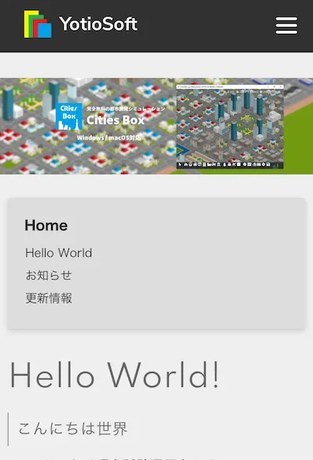
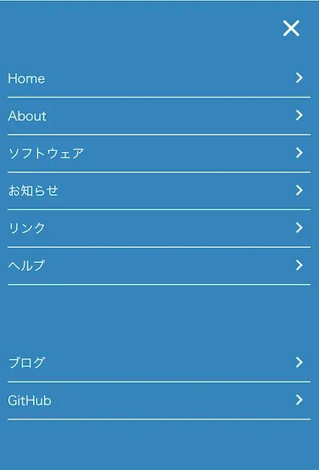

スマホ版サイトを公開しました
お知らせ
スマートフォンでの表示に対応しました。
PC版との主な変更点は以下のとおりです。
ヘッダーメニューをハンバーガーメニューに置き換え
サイドメニューをページの上部に移動
PC版との主な変更点は以下のとおりです。
 
ハンバーガーメニューは画面右上の三本線のボタンをタップすることで表示されます。
なお、PC上でブラウザのウィンドウを小さくした場合もスマホ版が表示されます。
現在確認されている問題点
現時点で以下の問題点が確認されています。
表が横スクロールできない
ハンバーガーメニューを開いたときにスクロールするとメニュー画面が消える
画像やフッターの文字がやや右側に寄っている
iOSのSafariでアクセスしたとき、カードをタップしても説明が表示されない
なお、ウィンドウサイズ変更時の問題は再読み込みを行うことで回避できます。
- PCでブラウザのウィンドウの大きさを変更したときの動作：
- ウィンドウを小さくしたとき：サイドメニューが常時画面上部に固定されてしまう
- ウィンドウを大きくしたとき：サイドメニューがスクロール時についてこなくなる
なお、ウィンドウサイズ変更時の問題は再読み込みを行うことで回避できます。